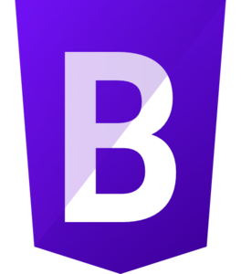

My Skills
HTML
CSS
Javascript

I'm a fullstack web developer with a strong foundation in web development best practices. My expertise lies in HTML, CSS, and JavaScript, allowing me to create stunning, responsive, and user friendly websites. I am passionate about crafting web experiences that not only look great but also provide a seamless and engaging user experience.
Download CV